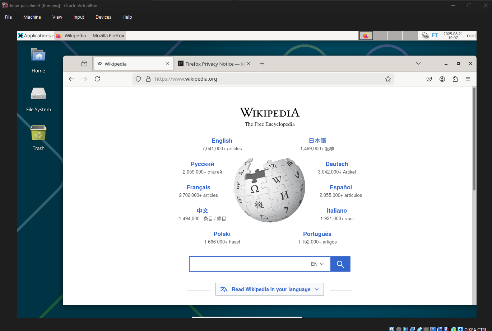

Harjoitus 1: Oma Linux
x) Tiivistelmä raportin kirjoittamisesta, Karvinen(2006)
Toistettava
- Sama tulos, jos raportin antaa toiselle opiskelijalle joka käyttää samaa ympäristöä
- Ympäristö pitää kuvata mahdollisimman tarkasti
Täsmällinen
- Kirjaa ylös käytetyt komennot, kellonajat, lopputulos
- On myös hyvä raportoida odottamattomista tuloksista
- Muista lisätä täsmällinen vikailmoitus
- Mennyt aikamuoto, imperfekti. "Painoin nappia", "Vedin piuhan", "Kirjoitin komennon"
Helppolukuinen
- Väliotsikot
- Tarkista oikeinkirjoitus
- Valinnainen tiivistelmä raportin alkuun
Viittaa lähteisiin
- Hyvä ja akateeminen tapa vaatii
- Esimerkkejä:
- Koistinen, Maija 2003: Apachen asennus, harjoitus 3. Kotitehtäväraportti. http://myy.helia.fi/~a123/linux/h-3.html
- Teittinen, Urpo 2006-03-27. Suullinen tiedonanto.
- Mynttinen ym. 1997: Practical Infection Vectors for Production Servers.
- Karvinen, Tero: Oppitunnit 2006-05-18, Linux tutustuminen -kurssi(www.iki.fi/karvinen/linux_tutustuminen.html).
Pahoja mokia
- Kertoo testeistä joita ei ole tehnyt
- Plagiointi
- Kuvien luvaton kopiointi
a) Linuxin asennus
Host laitteisto
- Prosessori: AMD Ryzen 9 5900x 12-Core
- Keskusmuisti: 32GB DDR4
- Näytönohjain: NVIDIA GeForce RTX 3080
- OS: Windows 11 Pro 23H2
Aloitin tehtävän kello 17:18.
Ensimmäiseksi latasin Virtual Box-sovelluksen 7.2.0 version Virtual Boxin virtalliselta sivulta.
Aloitin uuden virtuaalikoneen tekemisen painamalla New vasemmasta yläreunasta
Seuraavaksi latasin ISO kuvan Heinosen github ohjeiden mukaan.
Annoin virtuaalikoneelle nimeksi linux-palvelimet ja valitsin latauskansiosta ISO kuvaksi Heinosen ehdottaman. Huomasin, että luennolla käytetyssä esimerkissä VirtualBox oli hieman erinäköinen. Suurin ero on uuden virtuaalikoneen luomis ikkunassa oleva "Proceed with Unattended Installation" checkbox. Heinosen ohjeissa checkboxissa lukee "Skip Unattended Installation, joka tarkoittaa päinvastaista operaatiota. Omassa virtual boxissasni en myöskään voinut muokata virtuaalikoneen OS, OS distribution tai OS Version asetuksia jos valitsin checkboxin, ja OS versioksi lukittuisi 32-bittinen versio.
Seuraavalla sivulla valitaan virtuaalikoneen resurssit. Valitsin keskusmuistin määräksi 4 gigatavua, prosessorien määräksi 2 sekä massamuistiksi 20 gigatavua. Valitsin myös EFI käyttöönoton.
Summary ikkunassa näkyy valitut asetukset. Finish napin painamisen jälkeen virtuaalikone luodaan.
Luotu virtuaalikone näkyy nyt Virtual Boxissa. Käynnistin sen painamalla vihreää Start nappia.
Asennus ikkunasta valitsen Start installer, koska haluan tehdä koko asennuksen.
Asennus lähtee käyntiin. Valitsin kieleksi English, alueeksi Finland ja locale asetukseksi valitsen United States, koska Suomea ei listalta löydy. Näppäimistöksi valitsen Finnish.
Host nimeksi valitsin debian, jota asennusohjelma ehdottaa oletuksena. Asetin myös salasanan Root käyttäjälle. Full name:ksi asetin Aleksi Partanen ja usernamek:ksi laitoin aleksi, jolle annoin myös salasanan.

Seuraavaksi on luvassa levyn määrittäminen. Valitsen tällä kertaa Guided - use entire diskvaihtoehdon. Jatkan valitsemalla SCS13 (0,0,0) (sda) partitionin. Haluan myös kaikki tiedostot yhdelle partitionille. Nyt järjestelmä asennettiin virtuaalikoneelle.
Kun lataus oli valmis, painoin Continue, jonka jälkeen virtuaalikone käynnisti itsensä uudestaan.
Uudelleen käynnistyksen jälkeen aukesi kirjautumis ikkuna. Kirjauduin root-käyttäjälle,. Sisäänkirjautumisen jälkeen vielä kokeilin selaimella internet yhteyttä ja se toimi. Kello 19:08 linux on asennettu ja toimintakunnossa.
Tietoa
ätä dokumenttia saa kopioida ja muokata GNU General Public License (versio 2 tai uudempi) mukaisesti.
http://www.gnu.org/licenses/gpl.html
Lähteet
- Heinonen, Johanna 2025. How to Install Linux to Virtualbox? https://github.com/johannaheinonen/johanna-test-repo/blob/main/linux-20082025.md
- Karvinen, Tero 2006. Raportin kirjoittaminen. https://terokarvinen.com/2006/raportin-kirjoittaminen-4/
Tehtävänanto
- x) Lue ja tiivistä (Muutama ranskalainen viiva kustakin artikkelista riittää. Tässä alakohdassa ei tarvitse tehdä testejä tietokoneella)
- a) Asenna Linux virtuaalikoneeseen. (Tee raporttia varten uusi virtuaalikone, vaikka olisit asentanut sen aiemmin)